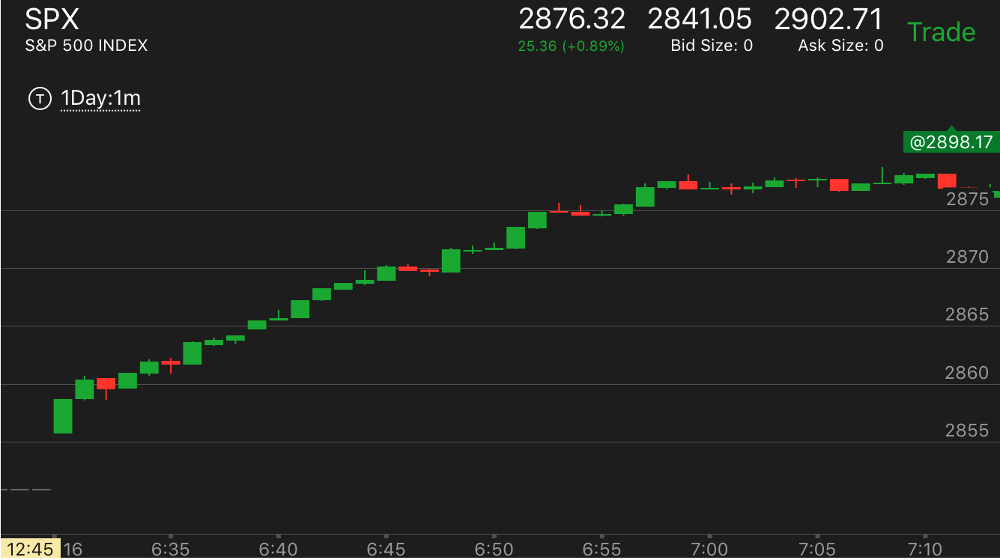

可以持续上涨或者下跌的走势
- 它如果前面几个bar比较大，后面出现了非常慢的持续的走势，那么这个走势会持续运动。不要想着它会回调。应该尽早加入。这个其实就是反常加速，区别在于，这个因为幅度不是很大，
可能根本没有任何回调。所以任何时候都要顺势操作。不要想着赚回调的钱。
- 下跌和上涨都是如此

图示:
1.开盘后，比较快的上涨，然后在3和5分钟的时候，停顿一下然后非常缓慢的上涨。这时就可以做多了。可以肯定，它建立了升势，而且没有到达顶部。
如果要是回调，可以看情况加仓，或者就一直拿着。直到它回来。